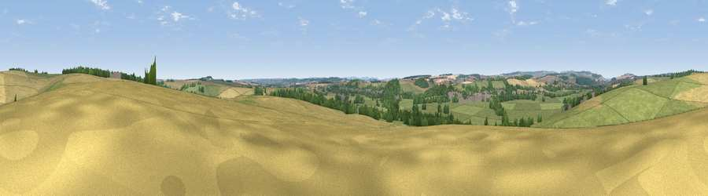

Viewpoint near Charlton Marshall
#28874 in England · top 52% of its area beats it · near Charlton MarshallWhere it is
The exact computed spot (ST 91525 04425). Click the marker for map links.
The view, rendered

A 360° render of this exact spot computed from the terrain model, tree cover and land cover — summer colours, afternoon light, calibrated against photographs of famous viewpoints. Real trees, hedges and buildings will differ in detail.
The panorama
Grey silhouette: terrain skyline in each direction (720 bearings, Earth curvature and refraction included). Dashed green: skyline with trees (+15 m) and buildings (+8 m) as obstacles. Blue strip: how far the ground is visible on each bearing.
Where the view opens
Wedge length = distance to the farthest visible ground on that bearing (vegetation-aware). Rings at 10, 25 and 50 km.
What fills the view
57% grassland · 29% cropland · 12% woodland · 2% built-up
Angular shares of the visible panorama (visual magnitude), not map area. Landscape diversity 0.44 (0–1 Shannon).
Key numbers
More beautiful places nearby
The staircase of upgrades: each row has a higher view potential than everything closer. Driving times are estimates from straight-line distance, calibrated against real road routing — check an actual route before setting out.
| Place | Direction | Drive | Score |
|---|---|---|---|
| Viewpoint near Spetisbury | S · 3 km | ~6 min | 45.2 |
| Viewpoint near Stourpaine | NW · 7 km | ~14 min | 47.7 |
| Viewpoint near Sturminster Marshall | SSE · 7 km | ~14 min | 50.3 |
| Viewpoint near Stourpaine | NW · 9 km | ~17 min | 57.5 |
| Hambledon Hill | NW · 10 km | ~20 min | 72.7 |
| Hambledon Hill | NW · 11 km | ~21 min | 74.6 |
| Viewpoint near Berwick St John | N · 16 km | ~29 min | 78.2 |
| Viewpoint near Kimmeridge | S · 23 km | ~37 min | 82.9 |
50.83929, -2.12173 · source: screening · position refined by local search. Computed location — check access rights before visiting.